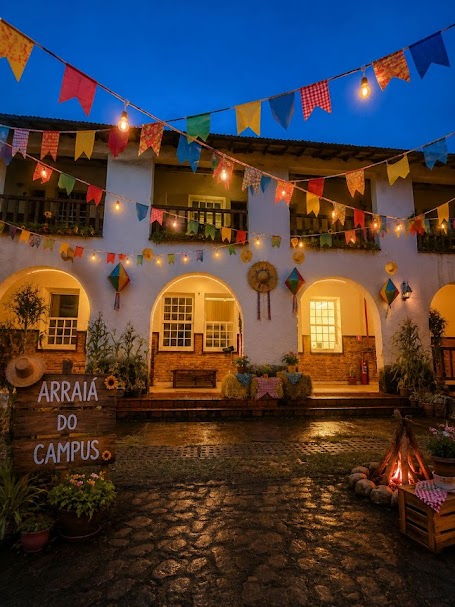

1ª Festa Junina do Instituto
Federal do Rio de Janeiro
IFRJ Campus Engenheiro Paulo de
Frontin
A 1ª Festa Junina do IFRJ Campus Engenheiro Paulo
de Frontin celebra a cultura popular brasileira e
fortalece os laços entre estudantes, servidores,
familiares e a comunidade. Com apresentações
culturais, comidas típicas, brincadeiras e muita
música, o evento promove momentos de integração,
valorização das tradições e convivência, reafirmando
o compromisso do IFRJ com uma formação que une
educação, cultura e cidadania

Descrição do Card: Imagem noturna de um prédio histórico do campus
decorado para uma Festa Junina. A fachada branca
com arcos iluminados recebe fileiras de
bandeirinhas coloridas e lâmpadas suspensas que
atravessam o espaço. O chão molhado reflete as
luzes quentes da decoração. Na parte frontal, há
uma placa de madeira com a inscrição “Arraiá do
Campus”, além de plantas, fardos de feno e uma
fogueira cenográfica. O céu azul-escuro e a
iluminação acolhedora criam um ambiente festivo e
convidativo.